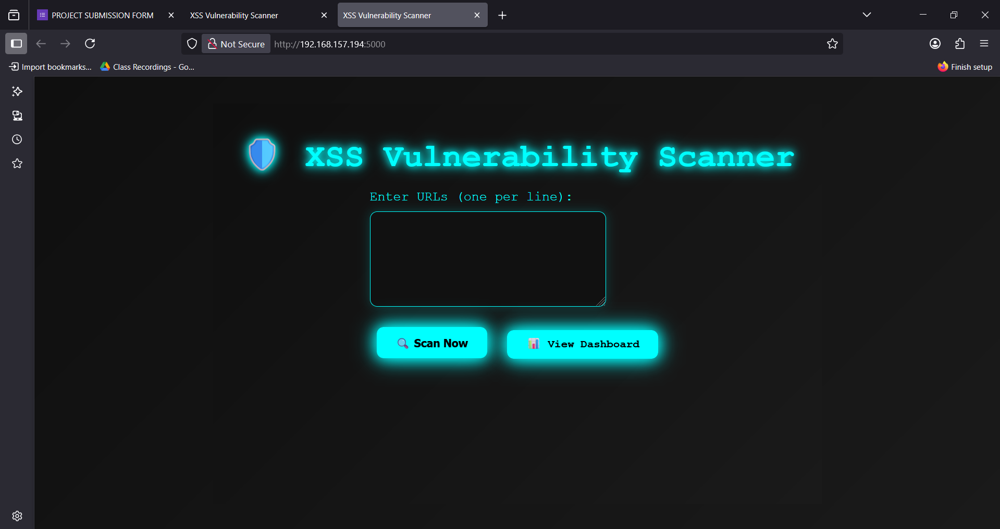
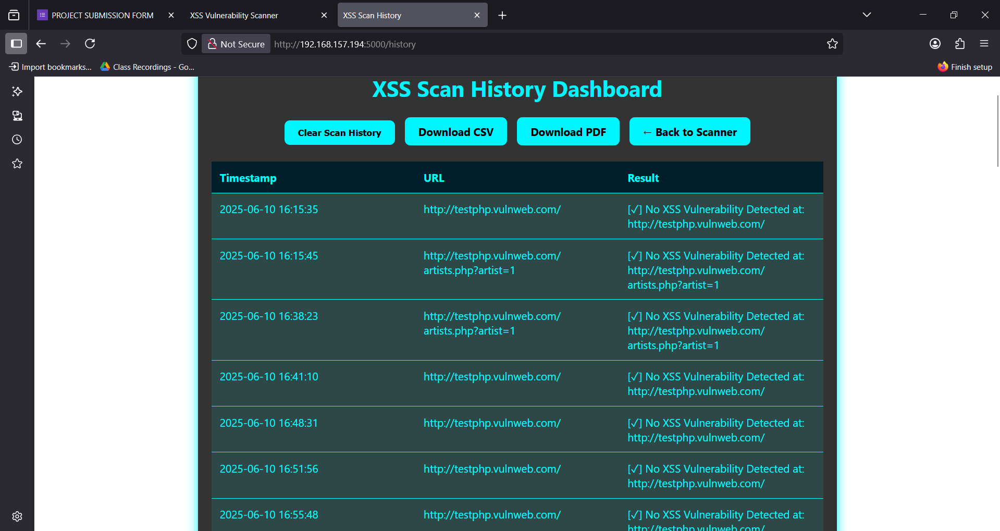

🛠️ How I Built the XSS Scanner
📌 Objective
To create an ethical tool that scans websites for reflected XSS vulnerabilities using Python and Flask.
🧰 Tools Used
- Python (requests, Flask)
- HTML + Bootstrap (for frontend)
- Pandas + ReportLab (for report export)
⚙️ Steps Involved
- Created a Flask web app with a form to enter URL
- Injected XSS payloads into the URL
- Captured reflected responses using regex
- Logged vulnerable URLs and results
- Displayed results on a styled dashboard
- Added export to CSV and PDF functionality
📸 Screenshot


🔗 GitHub Repo
View Code on GitHub
← Back to Home